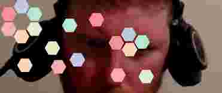

Explain complex concepts with mermaid.js
Transform your Clojure code into a beautiful, journal-style PDF, complete with math, charts, and images.
A simple exploration to create time-series data visualization
On the joy of building, the challenge of writing, and how to make blogging more fun and productive for Clojure developers.
Looking at leveraging cesium for geospatial visualization.
A lightweight way to cook with Clay and Scittle
tree-seq
Step-by-step development of a depth-first search, using tree-seq, to solve a classic puzzle.
Selective interaction with a persistent REPL sidebar inside your Clay documents
Macroexpand 2025: A pair of conferences by Scicloj: Macroexpand-Noj and Macroexpand-Deep. Call for proposals is open!

How to add UI components and ClojureScript to your Clojure namespace
Did you know your blog post can be a slideshow?
A quick exploration to simulate a classic fluid dynamics equation in Clojure using Java arrays.
A couple of quick ideas about visualizing data, especially with regard to comparison.
Sharing ideas and pirate treasure with ClojureCivitas.
A simple probability puzzle turns into a journey through triangular numbers and tessellated hexagons.
map
filter
n
print-method
Object
clojure.core/print-object
index.html